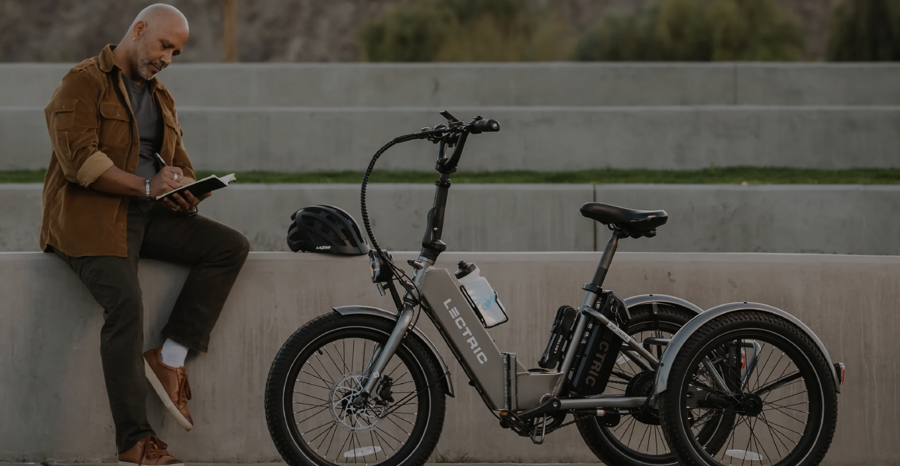
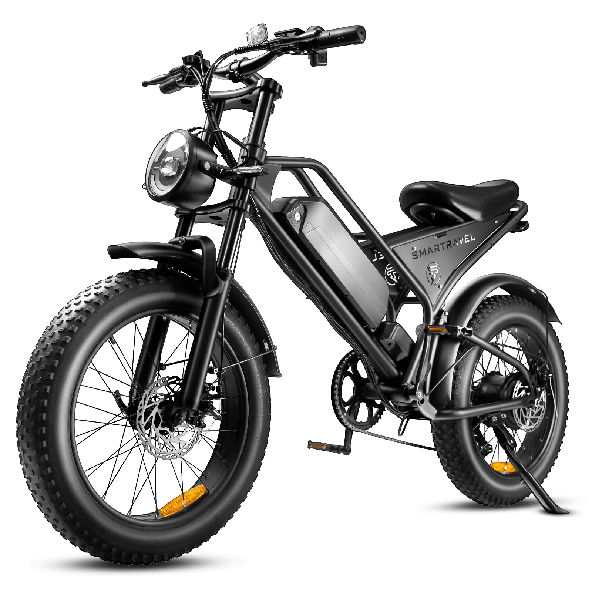
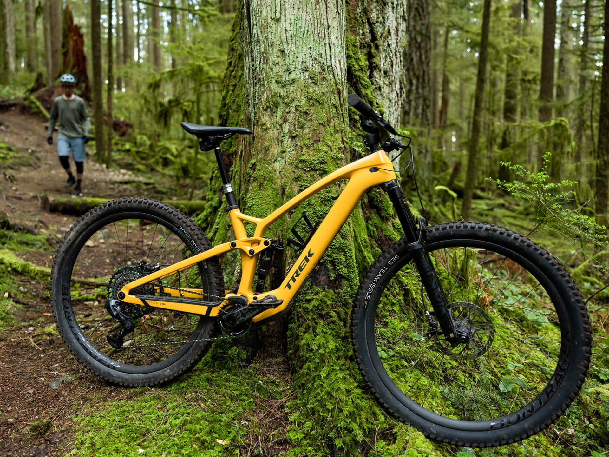

Electric Bicycles
Electric bicycles come with a built-in electric motor to assist with pedaling, making long rides easier. They are ideal for commuting and for those who want an extra boost.
Features
- Built-in electric motor
- Battery with a long range
- Pedal-assist and throttle options
- Comfortable and versatile design
Benefits of Electric Bicycles
- Ease of commuting: Electric bicycles make commuting less strenuous, especially in hilly areas.
- Environmentally friendly: They provide a green alternative to cars and motorcycles.
- Cost-effective: Lower running costs compared to motor vehicles.
- Health benefits: Offers a good workout with the option for assistance when needed.
Types of Electric Bicycles
Commuter Electric Bicycles
Designed for daily commuting, these bicycles come with features like fenders, lights, and racks.
Mountain Electric Bicycles
Built for off-road trails, these bicycles offer robust frames and high-performance motors for challenging terrains.
Maintenance Tips
- Regularly check the battery and ensure it's fully charged.
- Keep the bicycle clean and free from dirt and debris.
- Inspect the tires for wear and maintain proper inflation.
- Check the brakes and gears for smooth operation.
Buying Guide
When choosing an electric bicycle, consider the following factors:
- Range: How far you can travel on a single charge.
- Motor power: The strength of the motor and its impact on your ride.
- Battery life: Longevity and warranty of the battery.
- Weight: The total weight of the bicycle, especially if you need to carry it.
- Price: Compare features and prices to find the best value.
Safety Tips
- Always wear a helmet for protection.
- Ensure your lights and reflectors are working, especially for night rides.
- Follow traffic rules and ride defensively.
- Regularly maintain your bicycle to ensure safety features are functioning correctly.